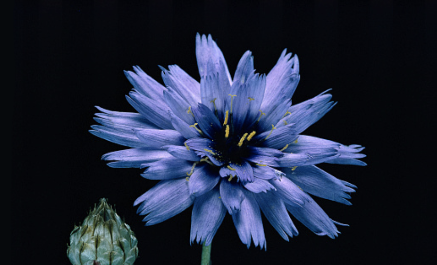

My Cupid Flower Boy

Once upon a time, there was a boy hiding behind a tree.
The boy was named Nico. He was a fairly attractive young man with blue eyes and dark auburn hair.
Nico looks like an ordinary and innocent human being, but he was not.
He was a flower. A violet-blue flower known as [[Cupid Dart]].
It might sound really cool and girly, but it’s not a gift. It’s a curse.
A minor god named [[Magther]] was furious at him and turned him into a half flower and half-human, [[Dalower]] for eternity.
Readers: How did Nico get cursed?
Before Nico was cursed, he drank a lot of champagne from a wild party and
mistook Magther's shrine for a toilet.
Readers: What a petty god!
Now now, don’t blame him.
After the party, Magther went to his shrine and found a boy lying face down pantless.
Of course, it was none other than Nico who damaged his whole shrine with his territory
Magther was very pissed at him and decided to put a cursed on him.
Readers: What was the curse?
The curse was very cruel for he can only transform into a human if the maiden (less than 25) sniffs his flower form.
Once Nico turns back to his human form, he must fulfill the maiden's quest to get her true love's kiss.
Alas, after finding the maiden’s soulmate, he turns back into a flower.
Nico suspected Magther who put the curse on him because to add more misery to his ill-fated life. Moreover, Magther was the god of punishments and magic after all.
Out of all the shrines Nico could've done his business in, it just had to be the god of punishments' shrine.
Nico was to forever locate the maiden's love, but was never to find his own and be reminded of that day when his heart was crushed.
Readers: Why was his heart crushed?
Magther decided to see Nico by making him pay for what he had done.
But first, he used a crystal ball to locate his whereabouts.
To his surprise, Magther saw Nico near a garden at the park, but what shocks him the most was that he saw Nico kneeling down in front of a petite young lady. Holding out in his hands was a Cupid's Dart Flower.
The minor god was quite amused when Nico was rejected because the girl took the flower, ripped the flower in half, slapped his face, and left. Nico was left in despair after that incident.
Readers: F Magther!
Actually, Nico's fate was suppose to be a Cupid Dart Flower when he reached the age of 18. He was never meant to be a human in the first place.
Magther looked at the time and said to himself, "It's time that boy must be flower."
Through the crystal ball, he saw Nico silently crying while staring at the flower being torned apart.
Magther chanted the spell towards the crystal ball directly to Nico.
In the crystal ball, Nico's body brighten up like a sun and started to become smaller and smaller.
Nico had transformed into a flower. A Cupid's Dart Flower.
Readers: Can you explain about the curse?
Nico's curse added more misery to his fate. He was to be a guardian in human form while searching for the maiden’s soulmate and reunite with the maiden. After that, he remained as a flower until the next maiden who sniffs his flower form. Without the curse he'll only stay as a flower for the rest of his life.
During his human form, he pursue his first love many times as that was his last wish before he turned into a flower.
After the last rejection, Nico turned into a flower on the night of his 18th birthday.
Readers: Oof why did Nico keep chasing after that girl when he knew he's going to turn into a flower. Weird logic!
Magther told Nico that he can by pass his flower fate and become human again if the person he loves shares the same mutual feelings as him.
It gets better when he meets a special someone ;)
Meanwhile, when Nico was in his human form, he cannot say that Magther cursed him to anyone or even the gods.
Whenever he does his lips are sealed for thirty minutes.
I mean he can try, but he wasn’t able to complete his sentence: “I was cursed by--”,
And zip, his lips are sealed.
Readers: How is Nico doing?
Anyways, as Nico peeked behind the tree, a wide smile spread across his face.
That’s a sign meaning his mission has accomplished.
As the couple walked down the park trail, it was time for Nico to go to the garden.
Story to be continued...
Readers: Wait I want to read more! This is getting interesting.
Orchid Tea: Unfortunately, I wasn't able to come up with the rest of the story since I have major writer's block. However, I did came up with the full set of characters for the story.
Readers: Can you introduce the characters?
Orchid Tea: I would love too, but I prefer if I start writing, I will include the characters along the way instead of spoiling it which defeats the purpose of reading it.
Readers: Will you be able to finish it?
Orchid Tea: Right now, it is still undecided, since this story has been created for 6 years already. This is basically the prologue. If I do have the chance to continue it, I will notify it during my announcements in the Orchid Calendar.
Readers: I will be waiting >:(
Orchid Tea: No promises ;)